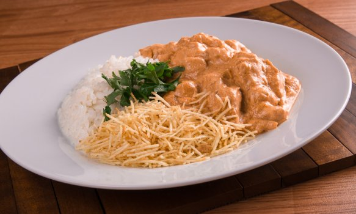

Receita de Strogonoff de frango

Ingredientes:
- 1 peito de frango
- 1 cebola média
- 1 colher (sopa) de manteiga
- 2 colheres de requeijão
- 2 cubos de caldo de galinha
- sal a gosto
- 4 colheres de molho de tomate
- 2 dentes de Alho
- 2 caixa de creme de leite
Modo de Preparo:
- Corte o frango em cubos.
- Coloque o frango em uma panela com alho já amassado, sal e o caldo de galinha.
- Eu não coloco água
- Em uma panela separada, enquanto cozinha o frango, coloque a manteiga e a cebola e deixe dourar.
- Apague o fogo
- Pronto!
- Misture com o frango e duas latas de creme de leite, o molho de tomate e o requeijão.
- Misture tudo e deixe no fogo por 3 minutos
- Depois tampe a panela deixa uns 5 minutos.
- Abra e mexa, está pronto
- Sirva com arroz branco e batata palha